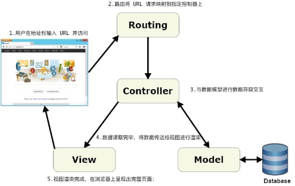

新建一个静态页面分支( static-pages )
git checkout master
git checkout -b static-pages
合并分支示例
git merge fake-branch
删除分支示例
git branch -d fake-branch
移除无用视图
rm resource/views/welcome.blade.php
配置路由
当用户查看一个网页时,一个完整的访问过程如下
1.打开浏览器输入 URL 并访问
2.路由将 URL 请求映射到指定控制器上
3.控制器收到请求,开始进行处理,如果视图需要动态数据进行渲染,则控制器会开始从模型中读取数据
4.数据读取完毕,将数据传送给视图进行渲染
5.视图渲染完成,在浏览器上呈现出完整画面

在 laravel 项目开发中,我们使用路由来定义 URL 和 URL 的请求方式,再将该 URL 分配到相应的控制器动作中进行处理,接下来将要构建三个静态页面内分别是主页,帮助页,关于页,
我们需要为路由指定三个不同的 URL ;

上面的代码中,我们为 get 方法传递了两个参数,第一个参数指明了 URL, 第二个参数指明了处理该 URL 的控制器动作. get 表明这个路由器会响应 GET 请求,并将请求映射到指定的控制器动作上
在laravel中我们较为常用的几个基本的 HTTP 操作是 GET, POST ,PATCH, DELETE
来分别处理 页面读取 数据提交 数据更新 数据删除
四个动作中 PATCH 和 DELETE 是不被浏览器所支持的 但是我们可以通过在提交表单中做一些手脚,
让服务器以为这两个动作是浏览器发出的一样,后面会讲如何在表单中通过添加隐藏域的方式来欺骗服务器
生成静态页面控制器
要让静态页面在网站上进行展示,我们需要先创建一个 StaticPagesController 控制器
这个控制器负责整个网站静态页面的处理,
laravel 的控制器命名规则统一使用 驼峰式大小写 和 复数形式来命名
一般情况下,通过以下命令来生成静态页面控制器
php artisan make:controller StaticPagesController

我们来为控制器加上三个动作来处理从路由器发过来的请求

然后访问
当然这三个只是纯文本,下面添加渲染真正的视图
添加静态页面视图
要在控制器中指定渲染某个视图,则需要使用 view 方法, view 接受两个参数 视图的路径名称 + 视图绑定的数据
第二个参数为可选参数,因为目前写的是静态页面,所以第二个参数为空
<?php
namespace App\Http\Controllers;
use Illuminate\Http\Request;
class StaticPagesController extends Controller
{
public function home()
{
return view('static_pages/home');
}
public function help()
{
return view('static_pages/help');
}
public function about()
{
return view('static_pages/about');
}
}
以上代码 将会渲染 resources/views 下面的 static_pages/home.blade.php 文件
默认情况下 所有的视图文件都放在 resources/views 下面
resources/views/static_pages/home.blade.php
<!DOCTYPE html>
<html>
<head>
<title>Sample App</title>
</head>
<body>
<h1>主页</h1>
</body>
</html>
resources/views/static_pages/help.blade.php
<!DOCTYPE html>
<html>
<head>
<title>Sample App</title>
</head>
<body>
<h1>帮助页</h1>
</body >
</html>
resources/views/static_pages/about.blade.php
<!DOCTYPE html>
<html>
<head>
<title>Sample App</title>
</head>
<body>
<h1>关于页</h1>
</body>
</html>
blade 模板
Blade 是 Laravel 中提供的一套模板引擎 在 Blade 视图中我们可以使用 Larav el 为这套引擎定义的一些默认方法,并完全兼容 PHP 语法的书写
在项目运行中, Laravel 会把所有的 Blade 视图进行编译缓存成普通的 PHP 代码,因此不必担心会对应用造成负担
使用通用视图
前面我们创建的几个视图里面包含着一些重复的代码,明显违反了 DRY ( Don't repeat yourself ) 原则
导致代码变得不够灵活,简洁.因此我们需要对页面进行重构,把多余的代码从视图中抽离出来,单独创建一个默认视图来进行存放通用代码.
我们给应用创建了一个 default 视图,并将其放在 layouts 文件夹中,此视图作为整个应用的基础视图,只要放在 views 里面即可, laravel 对视图的文件夹和文件命名没有限制,我们将 default 文件放在 layouts 下,只是为了让应用的目录结构更好理解
resources/views/layouts/default.blade.php
<!DOCTYPE html>
<html>
<head>
<title>Sample App</title>
</head>
<body>
@yield('content')
</body>
</html>
下面这行代码表示该占位区域将用于显示 content 区块的内容,而 content 区块的内容将由继承自 default 视图的子视图定义
@yield('content')
laravel 的 blade 模板支持继承,这意味着多个子视图可以共用父视图提供的视图模板,接下修改之前创建的首页视图文件,学习使用 Blade 模板的继承.
resources/views/static_pages/home.blade.php
@extends('layouts.default')
@section('content')
<h1>主页</h1>
@stop
我们使用了 @extends 并通过传参来继承父视图 layouts/default.blade.php 的视图模板
使用 @section 和 @stop 来填充父视图的 content 区域,所有包含在 @section 中的代码都将被插入到父视图的 content 区块
接下来继续对视图进行优化
resources/views/layouts/default.blade.php
<!DOCTYPE html>
<html>
<head>
<title>@yield('title', 'Sample')</title>
</head>
<body>
@yield('content')
</body>
</html>
我们给 @yield 传递了两个参数,第一个参数是该区块的变量名,第二个参数是默认值,表示当指定变量的值为空,使用 sample 作为值
resources/views/static_pages/help.blade.php
@extends('layouts.default')
@section('title', '帮助')
@section('content')
<h1>帮助页</h1>
@stop
resources/views/static_pages/about.blade.php
@extends('layouts.default')
@section('title', '关于')
@section('content')
<h1>关于页</h1>
@stop
注意的是,当 @section 传递了第二个参数时,便不需要通过 @stop 标识来告诉我们 laravel 填充块会在具体哪个位置结束
我们也可以在 @yield 区块后面进行内容拼接 让我们标题拥有更丰富的信息.
<title>@yield('title', 'Sample App') - Laravel 新手入门教程</title>